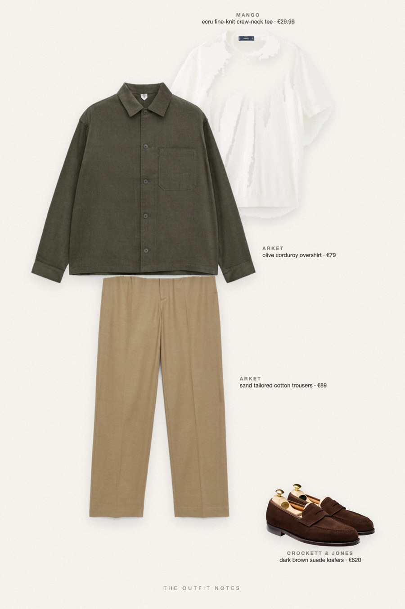
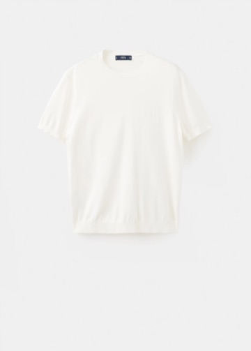
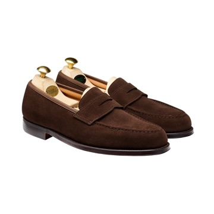

Café Olive
first date, golden hour

First date outfit men can actually copy this fall: an ARKET olive corduroy overshirt over a Mango ecru fine-knit tee, sand beige tailored trousers and dark brown suede Crockett & Jones Boston shoes. Chill fall outfit, smart casual and relaxed, easy for a café or a walk through the city.
The pieces
This page contains affiliate links: if you buy through them, we may earn a commission at no extra cost to you. Disclosure.
 ARKET
ARKET
Olive corduroy overshirt
Shop
Mango
Ecru fine-knit crew-neck tee
Shop ARKET
ARKET
Sand tailored cotton trousers
Shop
Crockett & Jones
Dark brown suede loafers
Shop
Prices are indicative, taken when the look was published, and may have changed. Pictures of the outfit are AI-generated illustrations of real products; the product photos are the retailers' own.
Published 2 October 2026.